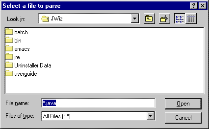
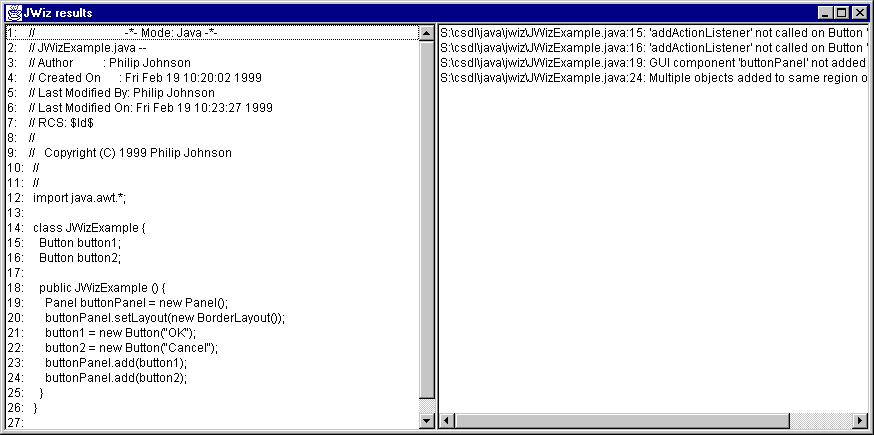
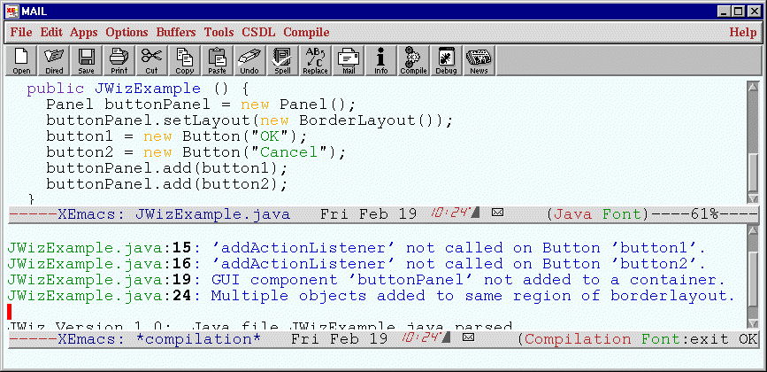

JavaWizard User Guide
Jennifer Geis
Collaborative Software Development Laboratory
Department of Information and Computer Sciences
University of Hawaii
http://csdl.ics.hawaii.edu/techreports/98-15/98-15.html
Last modified: Mon Apr 19 08:26:16 HST 1999
Table of Contents
JavaWizard (jwiz) is an automated code checker for the Java programming
language. Basically, jwiz scans through your code and looks for things
which will likely cause unintended behavior during run-time. Jwiz
assumes your code is syntactically legal. In other words, your code
must compile correctly before you can run jwiz on it. When
jwiz finds something that might be an error, it writes out a warning
message that contains the name of the file, the line number on which
the error occurred, and a description of the error.
An example of the kind of problem that jwiz can detect is when a button is
created but no actionlistener is invoked on it to handle the button
presses. Jwiz will give you the warning message like:
JWizExample.java:15: 'addActionListener' not called on Button 'button1'.
The next section documents the installation of JWiz, and the
following sections overview the GUI and command line interfaces.
To install JWiz, point your web browser at: http://csdl.ics.hawaii.edu/Tools/JWiz/JWiz.html.
From this page, you can access an InstallAnywhere script that downloads the
JWiz application and installs a double clickable icon to invoke the GUI
interface. A command line interface is also provided, and invocation
by command line is illustrated in a batch file distributed with the system.
After double clicking on the JWiz icon (or selecting "JWiz" from the Start
menu in Windows), the following window appears:

Select the file you want to run Jwiz on and press the OK button. Jwiz may
give you some status messages while it's running, then another window will
be displayed. If no warnings were generated, a window will be shown with
the message "No warnings were generated." If jwiz did find anything
however, the window will contain the code of the file you ran jwiz on and
the warnings generated, as illustrated below:

The batch files provided with the distribution illustrate how to
invoke the command line interface to JWiz. In essence, the command
line interface allows you to specify a single file (i.e. "FileName.java")
or all of the java files in the current directory using
a wild card (i.e. "*.java").
JWiz also comes with a rudimentary Emacs interface which is nevertheless
much more nicely integrated for development purposes. The Emacs interface
binds control-c control-j to an invocation of JWiz on the current
buffer. The results are printed in a compilation mode buffer, which allows
you to mouse-click on a warning message to go to the line containing the
warning. Here's a screen image illustrating the Emacs interface:

Jennifer Geis